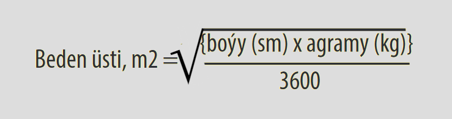

Bu bapda ýan kitabynyň dürli baplarynda, bäbekler we çagalar üçin agzalan derman serişdeleriniň möçberleri görkezilen. Ulanmaklygy ýeňilleşdirmek we çylşyrymly sanamak usullaryny ulanmazlyk üçin möçberler çaganyň agramyna laýyklykda berilýar. Hassahana şertlerinde derman serişdeleriniň möçberlerini sanamakda ýüze çykýan ýalňyşlyklar bütün dünýäde köp, şol sebäpli bu hasaplary geçirmekden gaça durmaly. Bu goşundyda 3 kg 29 kg agramdaky çagalar üçin niýetlenen möçberler görkezilen. Birinji 2 aýlyk bäbekler üçin niýetlenen möçberler 3 bapda görkezilen bap 3.
Emma käbir derman serişdeleri üçin çaganyň agramyna laýyklykda HAS TAKYK möçberleri anyklamaklyk gerek bolýar. Bu esasan hem terapewtik netijeliligi gazanmaklyk üçin takyk möçberler gerek bolan derman serişdelerine degişli, mysal üçin, digoksin, hloramfenikol, aminofillin we antiretrowirus serişdeleri.
Käbir antiretrowirus serişdeler çaganyň beden üstüne laýyklykdaky möçberlerde berilýär. Aşakdaky jetbelde, dürli agramdaky çagalar üçin beden üstüniň takmynan ölçegleri berilen

Şunlykda agramy 10 kg we boýy 72 sm çaganyň beden üsti
Jetwel G2.1 Çaganyň agramynyň (ýaşynyň) we onuň beden üstüniň derman serişdelerini ölçemeklik üçin ulanylýan gatnaşygy
| Çaganyň ýaşy ýa-da agramy | Beden üsti (m2) |
| Bäbekler (> 1aý) | 0,2–0,25 |
| Kiçijik çaga (1–<3 aý) | 0,25–0,35 |
| 5–9 kg | 0,3–0,45 |
| 10–14 kg | 0,45–0,6 |
| 15–19 kg | 0,6–0,8 |
| 20–24 kg | 0,8–0,9 |
| 25–29 kg | 0,9–1,1 |
| 30–39 kg | 1,1–1,3 |
Mysal: Eger maslahat berilýän möçber- 400 mg/m2 iki sapar günüň dowamynda bolsa, onda 15-19 kg çaga üçin maslahat berilýän möçber: (0,6–0,8) x 400 = 244–316 mg iki sapar günüň dowamynda.